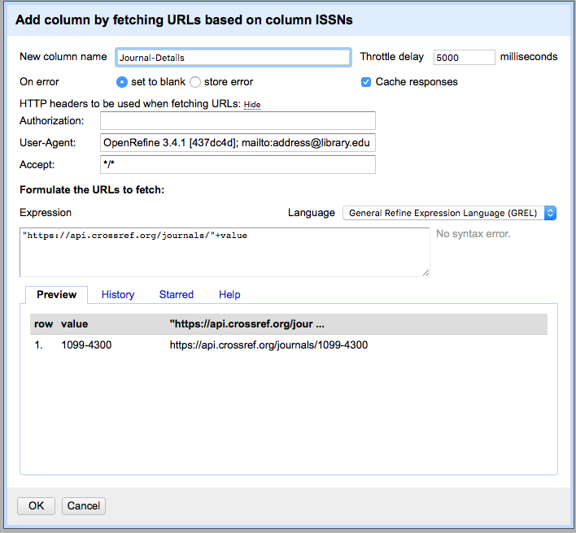

Looking Up Data
Last updated on 2024-05-08 | Edit this page
Estimated time: 30 minutes
Overview
Questions
- How do I fetch data from an Application Programming Interface (API) to be used in OpenRefine?
- How do I reconcile my data by comparing it to authoritative datasets?
- How do I install extensions for OpenRefine?
Objectives
- Use URLs to fetch data from the web based on columns in an OpenRefine project
- Add columns to parse JSON data returned by web services
- Understand how Reconciliation services are used to validate data
- Add functionality using OpenRefine extensions
Looking up data from a URL
OpenRefine can retrieve data from URLs. This can be used in various ways, including looking up additional information from a remote service, based on information in your OpenRefine data.
As an example, you can look up names against the Virtual International Authority File (VIAF), and retrieve additional information such as dates of birth/death and identifiers.
Typically this is a two step process, firstly a step to retrieve data from a remote service, and secondly to extract the relevant information from the data you have retrieved.
To retrieve data from an external source, use the drop down menu at any column heading and select ‘Edit column->Add column by fetching URLs’.
This will prompt you for a GREL expression to create a URL. Usually this would be a URL that uses existing values in your data to build a query. When the query runs OpenRefine will request each URL (for each line) and retrieve whatever data is returned (this may often be structured data, but could be HTML).
The data retrieved will be stored in a cell in the new column that has been added to the project. You can then use OpenRefine transformations to extract relevant information from the data that has been retrieved. Two specific OpenRefine functions used for this are:
- parseHtml()
- parseJson()
The ‘parseHtml()’ function can also be used to extract data from XML.
The next exercise demonstrates this two stage process in full.
Retrieving journal details from CrossRef via ISSN
Because retrieving data from external URLs takes time, this exercise targets a single line in the data. In reality you would want to run this over many rows (and probably go and do something else while it ran).
- Select a single row from the data set which contains an ISSN by:
- Clicking the star icon for the relevant row in the first column
- Facet by Star
- Choose the single row
- In the ISSN column use the dropdown menu to choose ‘Edit column->Add column by fetching URLs’
- Give the column a name e.g. “Journal_details”
- In the expression box you need to write some GREL where the output of the expression is a URL which can be used to retrieve data (the format of the data could be HTML, XML, JSON, or some other text format)
In this case we are going to use the CrossRef API: https://api.crossref.org/. Read more about the CrossRef service: https://crossref.org. Note that API providers may impose rate limits or have other requirements for using their data, so it’s important to check the site’s documentation. To comply with API rate limits, use the Throttle Delay setting to specify the number of milliseconds between URL requests. CrossRef, for instance, asks users to “specify a User-Agent header that properly identifies your script or tool and that provides a means of contacting you via email using ‘mailto:’.” User-agent headers provide administrators with user information that facilitates better administration and moderation of the API, and it is generally good etiquette to include a header with any API request.
To edit your User-Agent header:
- Click ‘Show’ (next to ‘HTTP headers to be used when fetching URLs’).
Note that OpenRefine has already populated the ‘User-Agent’ field with
information about the version of OpenRefine you are using; it should
look similar to
OpenRefine 3... [...](the information followingOpenRefinewill depend on the version of OpenRefine you are using). - At the end of the existing text, add
; mailto:address@library.edu, using your own email address. The full User-Agent field should now be similar toOpenRefine 3... [...]; mailto:address@library.edubut reflect your version information and email address.
The syntax for requesting journal information from CrossRef is
https://api.crossref.org/journals/{ISSN} where {ISSN} is
replaced with the ISSN of the journal
- In the expression box type the GREL
"https://api.crossref.org/journals/"+value
At this point, your screen should be similar to this: 
- Click ‘OK’
You should see a message at the top on the OpenRefine screen indicating it is fetching some data, with progress showing the percentage of the proportion of rows of data successfully being fetched. Wait for this to complete. Fetching data for a single row should take only ten seconds or so, but fetching data for all rows will take longer. You can speed this up by modifying the “Throttle Delay” setting in the ‘Add column by fetching URLs’ dialog which controls the delay between each URL request made by OpenRefine. This is defaulted to a rather large 5000 milliseconds (5 seconds).
At this point you should have a new cell containing a long text string in a format called ‘JSON’ (this stands for JavaScript Object Notation, although very rarely spelt out in full).
OpenRefine has a function for extracting data from JSON (sometimes referred to as ‘parsing’ the JSON). The ‘parseJson’ function is explained in more detail at https://docs.openrefine.org/manual/grelfunctions/#format-based-functions-json-html-xml.
- In the new column you’ve just added use the dropdown menu to access ‘Edit column->Add column based on this column’
- Add a name for the new column e.g. “Journal_title”
- In the Expression box type the GREL
value.parseJson().message.title - You should see in the Preview the Journal title displays
The reason for using ‘Add column based on this column’ is that this allows you to retain the full JSON and extract further data from it if you need to. If you only wanted the title and did not need any other information from the JSON you could use ‘Edit cells->Transform…’ with the same GREL expression.
Reconciliation services
Reconciliation services allow you to lookup terms from your data in OpenRefine against external services, and use values from the external services in your data. The official User Manual provides detailed information about the reconciliation feature.
Reconciliation services can be more sophisticated and often quicker than using the method described above to retrieve data from a URL. However, to use the ‘Reconciliation’ function in OpenRefine requires the external resource to support the necessary service for OpenRefine to work with, which means unless the service you wish to use supports such a service you cannot use the ‘Reconciliation’ approach.
There are a few services where you can find an OpenRefine Reconciliation option available. For example Wikidata has a reconciliation service at https://wikidata.reconci.link/.
In other cases people have built reconciliation applications for a specific service which you can download and run yourself. These vary in how they work, and what it takes to run them locally. For example there are multiple reconciliation applications for VIAF. Even for the same service (e.g. VIAF) different reconciliation applications (written by different people) can work in different ways and potentially give different results - so caveat emptor!
One of the most common ways of using the reconciliation option in OpenRefine is with an extension (see below for more on extensions to OpenRefine) which can use linked data sources for reconciliation. The RDF extension by Stuart Kenny can be downloaded from https://github.com/stkenny/grefine-rdf-extension/releases.
Other extensions are available to do reconciliation against local data such as csv files (see https://github.com/rufuspollock-okfn/reconcile-csv) and maintained lists of values (see https://github.com/opensanctions/nomenklatura).
For more information on using Reconciliation services see https://docs.openrefine.org/manual/reconciling.
Reconcile Publisher names with VIAF IDs
In this exercise you are going to use the VIAF Reconciliation service written by Jeff Chiu. Jeff offers two ways of using the reconciliation service - either via a public service he runs at http://refine.codefork.com/, or by installing and running the service locally using the instructions at https://github.com/codeforkjeff/conciliator.
If you are going to do a lot of reconciliation, please install and run your own local reconciliation service following the instructions at https://github.com/codeforkjeff/conciliator.
Once you have chosen which service you are going to use:
- In the Publisher column use the dropdown menu to choose ‘Reconcile->Start Reconciling’
- If this is the first time you’ve used this particular reconciliation
service, you’ll need to add the details of the service now
- Click ‘Add Standard Service…’ and in the dialogue that appears
enter:
- “https://refine.codefork.com/reconcile/viaf” for Jeff’s public service
- “http://localhost:8080/reconcile/viaf” if you are running the service locally
- Click ‘Add Standard Service…’ and in the dialogue that appears
enter:
- You should now see a heading in the list on the left hand side of the Reconciliation dialogue called “VIAF”
- Click on this to choose to use this reconciliation service
- In the middle box in the reconciliation dialogue you may get asked
what type of ‘entity’ you want to reconcile to - that is, what type of
thing are you looking for. The list will vary depending on what
reconciliation service you are using.
- In this case choose “Corporate Name” (it seems like the VIAF Reconciliation Service is slightly intelligent about this and will only offer options that are relevant)
- In the box on the righthand side of the reconciliation dialogue you can choose if other columns are used to help the reconciliation service make a match - however it is sometimes hard to tell what use (if any) the reconciliation service makes of these additional columns
- At the bottom of the reconciliation dialogue there is the option to “Auto-match candidates with high confidence”. This can be a time saver, but in this case you are going to uncheck it, so you can see the results before a match is made
- Now click ‘Start Reconciling’
Reconciliation is an operation that can take a little time if you have many values to look up. However, in this case there are only 6 publishers to check, so it should work quite quickly.
Once the reconciliation has completed two Facets should be created automatically:
- Publisher: Judgement
- Publisher: best candidate’s score
These are two of several specific reconciliation facets and actions that you can get from the ‘Reconcile’ menu (from the column drop down menu).
- Close the ‘Publisher: best candidate’s score’ facet, but leave the ‘Publisher: Judgement’ facet open
If you look at the Publisher column, you should see some cells have found one or more matches - the potential matches are shown in a list in each cell. Next to each potential match there is a ‘tick’ and a ‘double tick’. To accept a reconciliation match you can use the ‘tick’ options in cells. The ‘tick’ accepts the match for the single cell, the ‘double tick’ accepts the match for all identical cells.
- Create a text facet on the Publisher column
- Choose ‘International Union of Crystallography’
In the Publisher column you should be able to see the various potential matches. Clicking on a match will take you to the VIAF page for that entity.
- Click a ‘double tick’ in one of the Publisher column cells for the option “International Union of Crystallography”
- This will accept this as a match for all cells - you should see the other options all disappear
- Check the ‘Publisher: Judgement’ facet. This should now show that 858 items are ‘matched’ (if this does not update, try refreshing the facets)
We could do these one by one, but if we are confident with the matches, there is an option to accept all:
- Remove all filters/facets from the project so all rows display
- In the Publisher column use the dropdown menu to choose ‘Reconcile->Actions->Match each cell to its best candidate’
There are two things that reconciliation can do for you. Firstly it gets a standard form of the name or label for the entity. Secondly it gets an ID for the entity - in this case a VIAF id. This is hidden in the default view, but can be extracted:
- In the Publisher column use the dropdown menu to choose ‘Edit column->Add column based on this column…’
- Give the column the name ‘VIAF-ID’
- In the GREL expression box type
cell.recon.match.id - This will create a new column that contains the VIAF ID for the matched entity
Using the ‘cross’ function to lookup data in other OpenRefine projects
As well as looking up data in external systems using the methods described above, it is also possible to look up data in other OpenRefine projects on the same computer. This is done using the ‘cross’ function.
The ‘cross’ function takes a value from the OpenRefine project you are working on, and looks for that value in a column in another OpenRefine project. If it finds one or more matching rows in the second OpenRefine project, it returns an array containing the rows that it has matched.
As it returns the whole row for each match, you can use a transformation to extract the values from any of the columns in the second project.
You can use this function to compare the contents of two OpenRefine projects, or to use data between the two projects.
The VIB-Bits extension adds a number of very useful functions to
OpenRefine. One of them is “Add column(s) from other projects…”, which
provides a dialog window to help you work with the cross
function with less typing.
Extensions
The functionality in OpenRefine can be enhanced by ‘extensions’ which can be downloaded and installed to add functionality to your OpenRefine installation.
A list of Extensions (not necessarily complete) is given on the OpenRefine Extensions page at http://openrefine.org/extensions.
Key Points
- OpenRefine can look up custom URLs to fetch data based on what’s in an OpenRefine project
- Such API calls can be custom built, or one can use existing Reconciliation services to enrich data
- OpenRefine can be further enhanced by installing extensions